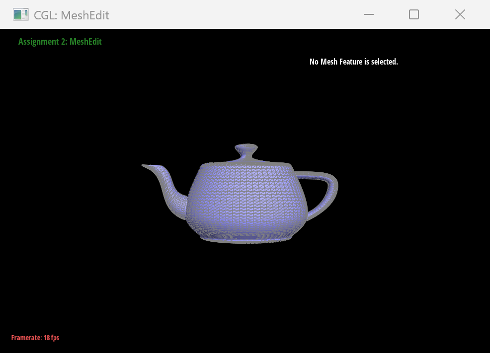
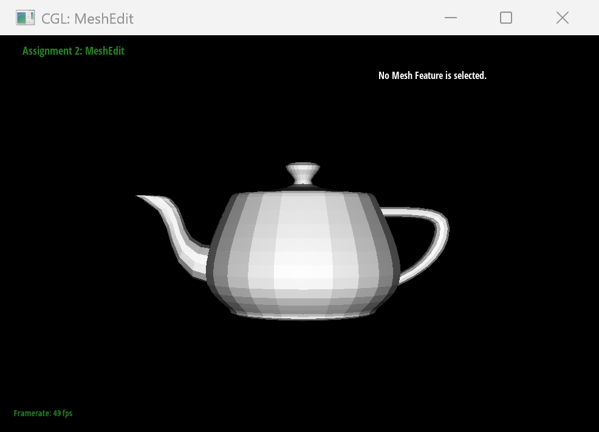
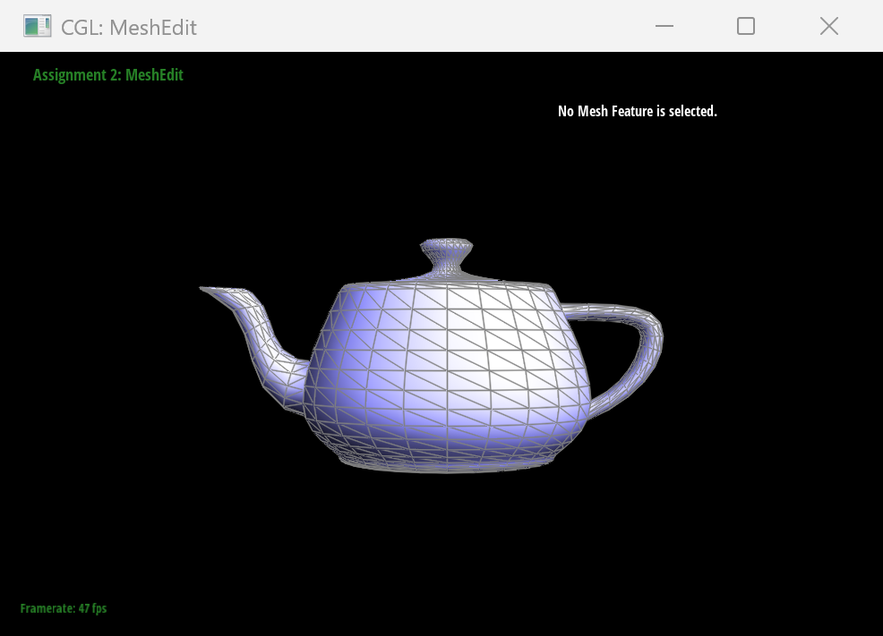

CS184/284A Fall 2026 Homework 2 Write-Up
Link to webpage: https://cal-cs184-student.github.io/hw2-go-bears-writeup/
Link to GitHub repository: https://github.com/cal-cs184-student/hw2-go-bears

Overview
In this assignment, we implemented algorithms for evaluating Bezier curves and surfaces, and operations for editing triangle meshes. We used de Casteljau's algorithm for the Bezier evaluations. For meshes, we computed area-weighted vertex normals, flipped and split edges, and implemented Loop subdivision.
The assignment helped us connect geometric formulas to the data structures used by a renderer. In particular, edge operations made it clear that every half-edge pointer must stay consistent when mesh connectivity changes.
Section I: Bezier Curves and Surfaces
Part 1: Bezier curves with 1D de Casteljau subdivision
A Bezier curve is defined by its control points and a parameter t between 0 and 1. De Casteljau's algorithm evaluates the curve by repeatedly interpolating adjacent points. At each level, a new point is computed as p'i = (1 - t)pi + t pi+1. Each level has one fewer point than the previous one. When only one point remains, it is the evaluated point on the curve.
We implemented one level in BezierCurve::evaluateStep. The function reads the member parameter t, loops over the adjacent pairs from index 0 to points.size() - 2, computes the interpolation above, and appends each result to a new vector. It returns that vector without modifying the input. Starting from six control points therefore gives five points after the first call, then four, three, two, and finally one point after five levels.
We chose the following six control points for bzc/curve3.bzc. The intermediate points change as t changes, while the first and last control points remain the endpoints of the curve.
6 0.150 0.200 0.250 0.800 0.400 0.900 0.700 0.150 1.300 0.300 1.150 0.850
We pressed E to advance one evaluation level at a time, from the original controls to the final point. We enabled C to draw the full curve alongside the levels. In the screenshots, white squares are the original control points, blue squares are the intermediate points, green is the curve, and red is the final evaluated point.
 |
 |
 |
 |
 |
 |

We first used the wrong loop bound and tried to read past the last point. We also initially reversed the interpolation weights. The full curve still looked the same, but at t = 0 the result should equal the first control point. Checking this endpoint exposed the error.
Part 2: Bezier surfaces with separable 1D de Casteljau
A Bezier surface is the two-dimensional extension of a Bezier curve. A bicubic patch is defined by a 4x4 grid of 3D control points and two parameters, u and v. Like a curve, it interpolates its corner control points and is shaped by the interior points. The Utah teapot is made from multiple such patches.
We evaluate the surface one parameter direction at a time. First, de Casteljau's algorithm evaluates each row at u, leaving one point per row. We then treat those points as a new curve and evaluate it at v. The result is the point on the patch at (u, v).
We implemented this in three functions. BezierPatch::evaluateStep performs one interpolation level on 3D points. evaluate1D repeats that step until one point remains. evaluate evaluates each row at u, collects the results, and evaluates them at v. The supplied patch code samples this function over a grid and creates triangles for rendering.

bez/teapot.bez evaluated with our separable de Casteljau implementation.Section II: Triangle Meshes and Half-Edge Data Structure
Part 3: Area-weighted vertex normals
Flat shading uses one normal per face, so the triangle boundaries are visible on a curved surface. For smoother Phong shading, we compute one normal at each vertex and interpolate it across the adjacent triangles.
In Vertex::normal(), we traverse the half-edges around the vertex using h = h->twin()->next(). For each real face, we take its two other vertices and compute the cross product of their position offsets from the current vertex. The magnitude of this cross product is twice the triangle's area, so adding the unnormalized cross products gives an area-weighted sum. We normalize the sum at the end and skip boundary faces.
The function is const, so the traversal uses HalfedgeCIter. We preserve the mesh's counter-clockwise face orientation when taking the cross product; reversing the order would point the normals inward. Pressing Q switches between flat shading and the vertex normals. The wireframe comparisons show that the geometry is unchanged: only the shading changes.
 |
|
 |
Part 4: Edge flip
An edge flip changes the diagonal inside the quadrilateral formed by two adjacent triangles. For triangles (a, b, c) and (c, b, d) sharing edge (b, c), the operation replaces that edge with (a, d). It is useful for changing mesh connectivity without moving vertices or changing the number of faces. In Loop subdivision, flips are also used after splitting to produce the required triangle pattern.
In HalfedgeMesh::flipEdge, we first return without changes if the edge is on a boundary. For an interior edge, we collect both adjacent triangle cycles before editing anything: six half-edges, their four outer twins, the four vertices, four surrounding edges, and two faces. This is important because following next() after rewiring has started could traverse a partly modified cycle.
We then use setNeighbors to reset the six half-edges in the two new triangles. The two half-edges belonging to the flipped edge now start at a and d. The other four keep their original twin, vertex, and edge, but some receive a new next or face. We also reset the halfedge() pointer for each affected vertex, edge, and face so that it still points to an element belonging to it. The four outer half-edges do not need rewiring. This is a constant-time local operation.
 |
 |
 |
 |
The debugging took a few attempts. At first, we treated an Edge as if it had next(), twin(), and face() pointers; those belong to a half-edge, so we had to start from e0->halfedge(). We also passed a half-edge where setNeighbors expects an edge and returned an empty iterator instead of the flipped edge.
The main connectivity bug came from trying to update only the pointers that seemed to change. Some vertex and face pointers still referenced half-edges that no longer started at that vertex or belonged to that face. We drew the two triangles, labelled the half-edges h0 through h9, and wrote the new cycles down before coding. This also helped us catch a later mix-up between h2 and h4. We then reset every inner half-edge and each affected element's halfedge() pointer. Checking reciprocal twin pairs and closed face cycles made the errors much easier to find. Repeated flips kept the mesh closed, and flipping an edge twice restored its original diagonal.
Part 5: Edge split
An edge split adds a vertex at the midpoint of an interior edge and connects it to the two opposite vertices of the adjacent triangles. The two triangles become four. Splitting increases the mesh resolution while keeping the surface connected. It is also a building block for Loop subdivision, which splits every original edge before flipping selected new edges.
In HalfedgeMesh::splitEdge, we first reject a boundary edge; this implementation does not support boundary splits. For an interior edge, we collect the same two-triangle neighborhood used by the flip before changing any pointers. We create one vertex, three edges, two faces, and six half-edges. The new vertex is placed at the average of the two original endpoint positions.
We reuse the original edge for one half of the split edge and create a new edge for the other half. Two additional edges connect the midpoint to the opposite vertices. The original faces are reused for two of the four triangles, and two new faces are added. We then assign the next, twin, vertex, edge, and face pointers for all twelve half-edges, and update the halfedge() pointers on the five vertices, eight edges, and four faces. The midpoint's half-edge is set to one of the two halves of the original edge, as required. Since only this fixed neighborhood is changed, the operation takes constant work.
 |
 |
 |
 |
 |
 |
 |
 |
The split was harder to debug than the flip because it creates more elements and more pointers. One early mistake was copying the half-edge collection from the flip while changing the meaning of h4 and h5 in our drawing. The pointer assignments looked consistent on paper, but the names referred to different half-edges in the code. We returned to the same labels used for the flip so both operations could be checked against one diagram.
After fixing the labels, we found that h0's next and twin had been confused, and the twins for two surrounding half-edges were reversed. We checked that every twin points back to its partner and that following next around each triangle returns to its first half-edge. The viewer tests then included repeated splits and combinations of splits and flips on nearby edges; the resulting mesh remained connected and had no holes. The isNew flag also needed care: it marks the new edges across the old triangles, not every edge created by the function. The two halves along the original edge must not be flipped during Loop subdivision.
Boundary-edge splitting is not implemented, so there are no boundary-split results to show.
Part 6: Loop subdivision for mesh upsampling
Loop subdivision first splits each triangle into four, then updates vertex positions. In MeshResampler::upsample, we compute all new positions from the original mesh before changing it. For an interior edge with endpoints A and B and opposite vertices C and D, the new vertex is 3/8(A + B) + 1/8(C + D). An old vertex of degree n is updated using (1 - nβ)V + βΣVi, with β = 3/16 for degree 3 and β = 3/(8n) otherwise.
We store the original edges, split each original interior edge once, then flip new edges that connect an old vertex to a new one. Finally, we apply the positions saved earlier. This keeps the position calculations based on the original mesh and avoids splitting newly created edges in the same iteration.
The code includes the Loop position rule for boundary vertices, but boundary-edge splits are skipped, so boundary meshes are not fully supported.
INSERT IMAGE: Show dae/cube.dae before subdivision and after several presses of L. Add our observation about how its sharp corners and edges change.
INSERT IMAGE: Show the cube after preprocessing with edge flips and splits, then after the same number of subdivision rounds. Add our comparison and explain whether preprocessing made the result more symmetric.
(Optional) Section III: Potential Extra Credit - Art Competition: Model something Creative
We did not create a custom model for the optional art competition.